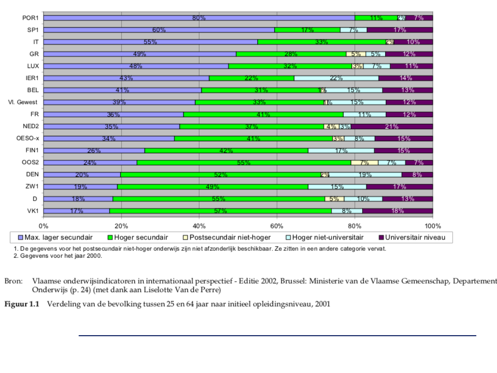

- Van Petegem, P., & Imbrecht, I. (2012). Organisatie Volwassenenonderwijs.
- Boeren, E., & Nicaise, I. (2009). Wie neemt deel en waarom?
- Knowles (2005). An andragogical process model for learning. (H6 Knowles)
- Knowles (2005). Andragogy in practice. (H7 Knowles)
- Jarvis, P. (2010). Perspectives on learning theory. (H5 Jarvis)
Planning lessen (vrijdagvoormiddag)
- 17 feb: Les 1
- 14 feb: Les 2
- 03 mrt: Les 3
- 10 mrt: Les 4
- 17 mrt: geen les
- 24 mrt: geen les
- 31 mrt: Les 5
|
- 07 apr: geen les
- 14 apr: geen les
- 21 apr: Les 6
- 28 apr: Les 7
- 05 mei: Les 8
- 12 mei: Les 9
- 19 mei: Les 10*
|
Adult Learning and Education

Levenslang leren herverdelen
- Nicaise, H1, deel 2
- Nicaise, I., Levenslang leren herverdelen. In I. Vanhoren (red.), Jaarboek Levenslang en Levensbreed Leren 2002, deel 2: Capita Selecta. Brussel: Min. Vl. Gem., Adm. Permanente Vorming / Leuven: HIVA.
Inhoud "Levenslang leren herverdelen" (Nicaise)
- Ongelijke verdeling van kennis en vaardigheden
- De paradox
- Naar een verklaring van de paradox
- Recente beleidsontwikkelingen op internationaal vlak
- Recente beleidsontwikkelingen in Vlaanderen
- Besluit
Inhoud "Levenslang leren herverdelen" (Nicaise)
- Ongelijke verdeling van kennis en vaardigheden
- De paradox
- Naar een verklaring van de paradox
- Recente beleidsontwikkelingen op internationaal vlak
- Recente beleidsontwikkelingen in Vlaanderen
- Besluit
De ongelijke verdeling van kennis en vaardigheden
- Vlaanderen (vs. internationaal perspectief)
- Vrij hoog geschoolde bevolking
- Kleine middenmoot (HSO diploma)
- Dus: LLL-beleid moet kloof tussen hoog- en laaggeschoolden dichten
De ongelijke verdeling van kennis en vaardigheden
- Scheve verdeling in intiële onderwijs
- Door invloed van sociale afkomst
- Hardnekkige sociale ongelijkheid in onderwijsmobiliteit
- Voorbeeld o.b.v. diploma moeder
- Ook etnische herkomst
- Voorbeeld 3x meer halen geen HSO diploma (38,5%)
- Geslacht en gezinssituatie minder
- Opgelet: verschil in leeftijd!
- Ouderen meer laaggeschoold
- Oudere vrouwen meer laaggeschoold
- Met leeftijd speelt gender wel
- Diploma zegt niet alles
- Hoe zit het met effectieve vaardigheden?
- IALS – International Adult Literacy Survey
- Bekijkt functionele geletterdheid
IALS
De ongelijke verdeling van geletterdheid en gecijferdheid in Vlaanderen blijkt op basis van dit onderzoek* beter mee te vallen dan op basis van diploma’s (p. 184)
*IALS, 2000. Data van 1996
This is some 6 text!
This is some 2 text!
This is some 3 text!
This is some 5 text!
This is some 4 text!
Dit suggereert dat het aantal ‘laaggeletterden’ relatief kleiner is dan het aantal ‘laaggediplomeerden’ (p. 184)
IALS - ongelijkheid
- Ongelijkheid naar geslacht
- Vlaamse mannen presteren beter
- Economische inactiviteit bij vrouwen?
- Ongelijkheid naar leeftijd
- Oudere Vlamingen presteren slechter
- Hoge inactiviteitsgraad (incl. werkloosheid)